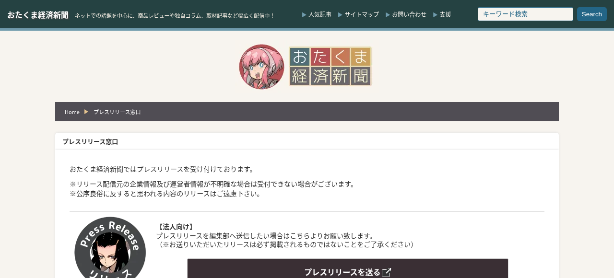
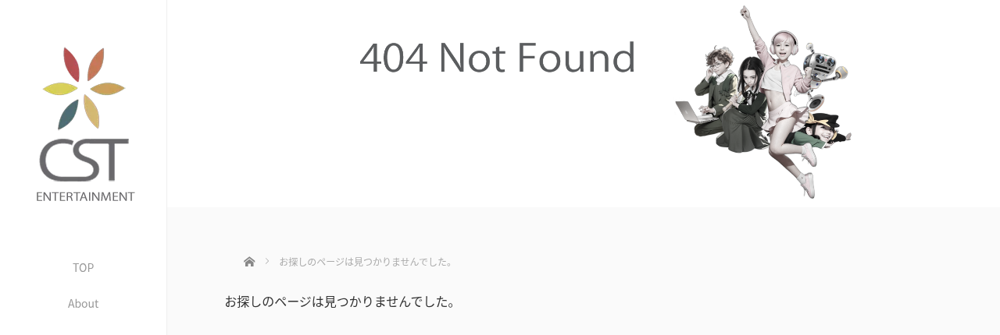
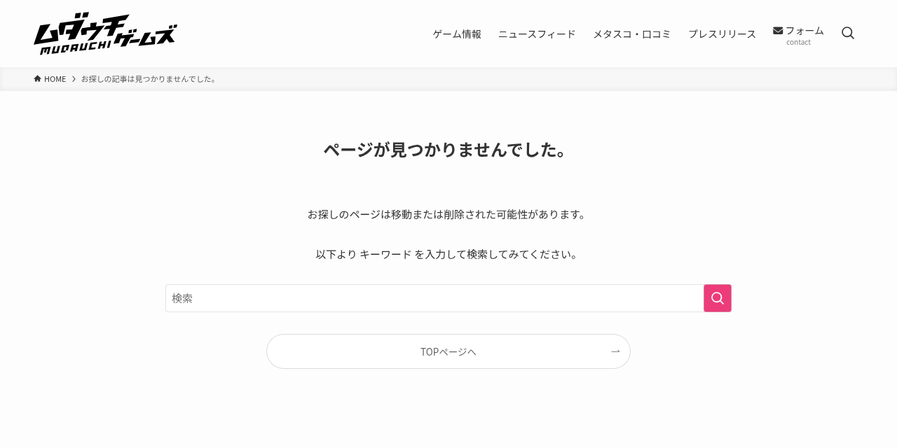
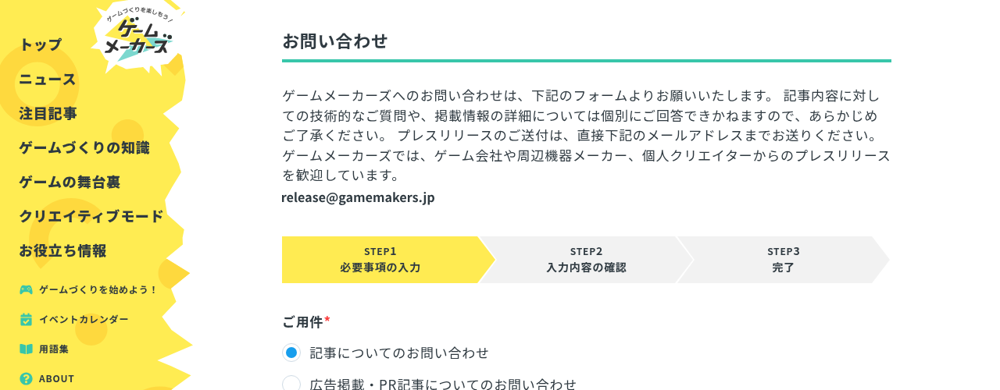
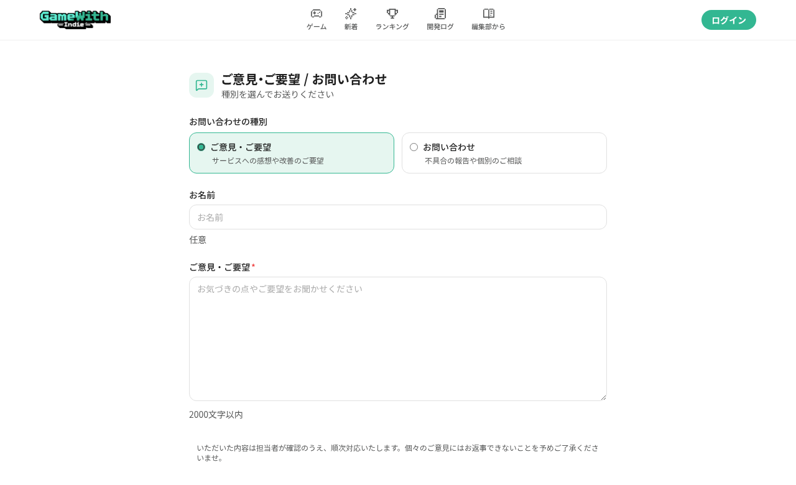

AIエージェントにプレス送付を任せてみた（）
この記事の読み手は、人ではなくエージェントに国内ゲームメディアへのプレス送付を振ろうとしている人です。エージェント向けの手順書ではありません。人がエージェントに仕事を渡したときに、どこまで通って、どこで窓口が止まって、どこを人間が拾うかのレポートです。媒体側の 404 は、送り手が気づける材料にもなると感じました。
令和8年8月31日、株式会社佐野組で実施しました。掲載の有無は記載していません。プレスリリースの掲載依頼を送れたかどうかのレポートです。
下の表は、その日に公式ページを開いて記録したものです。既存の送付先シートの行は転載していません。窓口は各媒体が公開している情報です。再利用してよいです。次第に古くなるので、プレスリリース依頼を送付する時点での公式の連絡先を優先したほうがよいです。
先に結論
エージェントは、公式に載っているメール下書きと、使えるフォームの送信まで持てます。Send と、CAPTCHA と、スパム判定のあとの再送は人間です。案内ページが開いても、ボタン先が 404 なら送れません。
参考文献
メールアドレスは、公式に載っていた適切なものだけを使いました。フォームは、公式ホームページから実際に送信できたものだけを一覧にしました。
- ゆーりんち「インディーゲームのプレスリリースの送り方」（令和6年3月）と、記事が案内する送付先シート
- 寺島壽久／ゲームキャストの公開リスト
- Games Press: How to Submit News（海外ハブ。ゆーりんち記事からもリンク）
- GameWith Indie のプレスキット記事（文面とキットのガイド。このページ上に送付先メールもフォームもない）
掲載実績の転載サイト、リスト運営者の個人メールは送付先ではありません。
Google シートを CSV で落とすと、見出しだけ出てメールが空になることがありました。空欄を宛先なしと解釈すると漏れます。xlsx か、ブラウザでシートを直接開きました。各公式の「プレスの送り先」を活用しました。
組の表の見方
メールとフォームは列が違うので、表を分けています。受付が開かなかったメディアは、その下の本文と写真です。
メール
| 媒体 | メール | 確認ページ | メモ |
|---|---|---|---|
| AUTOMATON | press@automaton.am |
Contact | 問い合わせフォームとは別 |
| 電ファミニコゲーマー | release@mare-inc.net |
About | 窓口は画像アドレス |
| Gamer | press@gamer.ne.jp |
取材・プレスリリース | 窓口は画像アドレス |
| GameBiz | release@gamebiz.jp |
受付と取材 | |
| indiegamesjapan | press@indiegamesjapan.com |
About Us | 一般は info@。当日返信1通 |
| Indie Freaks | press@indie-freaks.com |
コーポレート | 旧 /contact は404。相談は contact@ |
| ファミ通.com | kgl-famitsu-release@ml.kadokawa.jp |
KADOKAWA Game Linkage | 掲載ハードル高め |
| 電撃オンライン | dol.release@kadokawa.jp |
同上 | ★を@に置換 |
| GAME Watch | game-watch@impress.co.jp |
編集部へのご連絡 | |
| IGN Japan | ign_japan@ign.com |
お問い合わせ | 大作中心 |
| ねとらぼ | g-release@ml.itmedia.co.jp |
ITmedia リリース送付 | document.write 分割表記を結合 |
| ゲームキャスト | gamecastblog@gmail.com |
連絡先 | PR歓迎。返信はほぼ期待しない記載 |
| SQOOL.NET | press@sqool.net |
お問い合わせ | 現行は press@。古いメモの pr@ や受付停止とは食い違う |
| オタク産業通信 | pr@otakuindustry.biz |
お問い合わせ | 広告は media@ |
| ゲームメーカーズ | release@gamemakers.jp |
inquiry | フォーム POST が 403。ページ記載のメールへ |
| ゲームライターコミュニティ | info@gamewriter.jp |
ニュース掲載 | 専用フォームは完了画面なし。同じページのメールへ |
フォーム
添付欄が無いことが多いです。画像はメール側へ付けるか、素材置き場のURLを本文に書きます。
| 媒体 | フォーム | 確認ページ | メモ |
|---|---|---|---|
| もぐらゲームス | 現行Googleフォーム | もぐらゲームスとは | 古いリストの別フォームとはURLが違う。添付なし。『回答を記録しました。』 |
| インサイド | IID recipient=inside | 同左 | 添付なし。thanks.html |
| Game*Spark | IID recipient=gamespark | About | インサイドと同じ完了画面 |
| ゲームドライブ | お問い合わせ | 同左 | 種別『プレスリリースについて』。complete『送信完了しました。』添付なし |
二段（フォームのあとメール）
| 媒体 | フォーム | メール | メモ |
|---|---|---|---|
| 4Gamer.net | ニュースリリースの送付 | info@4gamer.net |
フォーム完了。アドレスはフォームに出ない。編集部案内は新作 info@ のみ、テキストかPDFと画面写真、掲載は担当判断、広告の案内には返さない |
受付が開かなかったメディア
誤った URL が流通していたので、正しい URL があれば出稿依頼が届きやすくなると感じました。
おたくま経済新聞（CST ENTERTAINMENT）
案内ページは開きます。受付ページがありません。ご意見フォームは別の窓口なので、プレスの代用にしていません。営業リストから外しました。
法人向けの入口 otakuma.net/contact/release は 200 です。「プレスリリースを送る」のボタン先 cste.co.jp/contact/otakei/release.html が 404 です。


個人向け おたくまプレス も案内は残っています。「利用申請フォームへ」が cste.co.jp/contact/otakuma/user-press-request へ飛び、こちらも 404 です。

ムダウチゲームズ
シートに残っている mudauchi.info/pr-form は 404 です。

現行は総合お問い合わせ mudauchi.info/contact です。現行フォームはスパム判定で止まりました。「時間をあけて再び」と出ました。本文の URL を減らしても同じでした。スパムを拒否しているようなので、エージェントからではなく、人が送るほうがよさそうだと感じました。今回は切っています。
ゲームメーカーズ
gamemakers.jp/inquiry/ はページ自体は開きます。送信（/wp-json/custom/v1/form/）が 403 で、完了画面に進みません。本文にプレス宛先 release@gamemakers.jp が書いてあります。フォームではなくメールへ、とページ自身が書いています。

フォームが 403 の日は、ページ記載のメールへ送りました。連打はしていません。
ゲームライターコミュニティ
gamewriter.jp/ニュース掲載/ は専用フォームです。送信後、完了画面が出ないことがありました。再送する前に、同じページの info@gamewriter.jp を見ました。Google の vignette 広告がフォームを覆うことがあります。エージェントが広告を本体と誤認します。
GameWith Indie
indie.gamewith.jp/feedback はご意見（返信なし）と、ログイン必須のお問い合わせです。種別はご意見・ご要望／不具合の報告。プレス受付ではありません。

露出はプロジェクト登録の側です。Steam URL が要る運用なら、ストアが立つまで置けません。
エージェントに任せたときに落ちたところ
今回落ちたのは、リスト不足より指示の穴でした。
差し込み変数が本文に残る。 「{MEDIA} ご担当者様」のまま出す事故です。下書き完了の条件に「波括弧の変数がゼロ」を入れました。媒体名は実名だけです。
古い下書きを継ぐ。 一度書いた配信日が残ると、別の日に送っても古い日付が出ます。送る日の文だけを正本にしました。画面の記憶で漢字を打つと、固有の漢字が変換で別字になります。名乗りの漢字が別字になったケースがあります。公開のチェック項目に、特定の人名用漢字は置いていません。
本文に「添付しております」と書いて、ファイルが無い。 API で下書きを更新すると、サイズ制限で添付だけ落ちることがあります。Send の直前は、人が目視するか、添付の有無を機械で検証してから人が送りました。
完了画面が出る前に再送する。 フォームは一回押して待ちました。スピナーが消えないときは、連打せず記録して人へ返しました。
ご意見箱・404・ログイン壁を、プレス受付と同一視する。 エージェントに「問い合わせフォームなら送れ」とだけ書くと、ご意見箱やログイン必須へ流れます。種別がプレス／ニュースリリースのときだけ送りました。
キービジュアルの寸法を混ぜる。 エックスのヘッダー（よくある 1500×500）と、Web メディア向け 16:9（1920×1080）は別ファイルです。ヘッダーをキービジュアルの代わりには付けていません。生成AIメタが付いたファイルは、媒体の運用によっては弾かれます。
Send まで自動化する。 下書きとフォーム入力までがエージェント、送る判断は人、が今回の切れ目です。
エージェントができたこと
- 参考文献の記事とシートを入口にして、各公式の「プレスの送り先」ページをその日に開きました
- メールかフォームか、ご意見・広告・ログイン必須かを分けました
- 媒体名を入れた実文の下書きを作りました。差し込み変数が残っていないことを機械的に検査しました
- 使えるフォームへ入力し、完了画面の文言を残しました
- 404・403・スパム判定・完了画面なしを、媒体ごとに記録しました
人が持ったこと
- メールの Send
- CAPTCHA、ログイン、決済
- スパム判定のあとの再送判断（同じフォームを何度も叩かない）
- キービジュアルの手付け。API 経由の添付はサイズで落ちることがある
- 「1点添付しております」と実ファイルが一致しているかの目視
- 広告の案内への返信をしない判断
今回の切れ目
- 入口は公開記事とシート。行は転載していません。アドレスは発明していません。
- その日の公式で、メール／フォーム／受付なし／別の窓口を分けました。
- 本文は媒体名入りの実文。差し込み変数ゼロ。日付は送る日。
- キービジュアルは 16:9 を1点。ほかは置き場の URL。
- フォームは完了画面の文言を残しました。無ければ再送せず、ページ記載のメールを人へ返しました。
- メールの Send は人。CAPTCHA も人。
- 404 と 403 は営業リストから外すか、ページ記載の別の窓口へ。案内ページがあることと受付が開いていることは別です。
令和8年8月31日現在です。この記事より、プレスリリース依頼を送付する時点での公式の連絡先を優先したほうがよいです。